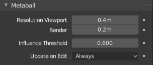

Properties¶
Reference
| Mode: | Object and Edit Mode |
|---|---|
| Panel: |
All Meta objects of a same family in a scene interact with each other. The settings in the Metaball section apply to all meta objects of the active family. In Edit Mode, the Active Element panel appears for editing individual meta elements.

Family meta properties. |
Individual meta properties. |
Resolution¶
The Resolution controls the resolution of the resultant mesh as generated by the Meta objects.
- Viewport
- The 3D Viewport resolution of the generated mesh; finest to coarsest.
- Render
- The rendered resolution of the generated mesh; finest to coarsest.
One way to see the underlying mathematical structure is to lower the Resolution, increase the Threshold and set the Stiffness (see below) a fraction above the Threshold. Fig. Underlying structure. is a meta cube with the above mentioned configuration applied as follows: Resolution of 0.410, Threshold of 5.0 and Stiffness a fraction above at 5.01.

Underlying structure. |

Meta cube shape. |
You can clearly see the underlying cubic structure that gives the meta cube its shape.
Influence Threshold¶
Influence Threshold defines how much a meta’s surface “influences” other metas. It controls the field level at which the surface is computed. The setting is global to a group of Meta objects. As the threshold increases, so does the influence that each meta has on each other.
There are two types of influence: positive or negative.
Update¶
While transforming metas (move, scale, etc.), you have four “modes” of visualization, located in the Update buttons group of the Metaball panel:
- Always
- fully display the meta during transformations.
- Half
- During transformations, display the meta at half its Wiresize resolution.
- Fast
- Do not display meta during transformations.
- Never
- Never show meta mesh (not a very recommended option, as the meta is only visible at render time!).
This should help you if you experience difficulties (metas are quite computationally intensive…), but with modern computers, this should not happen, unless you use many metas, or very high resolutions…